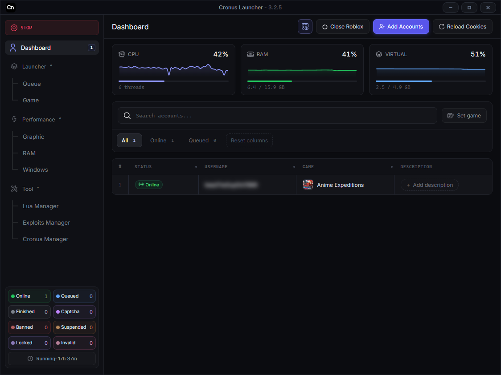

ล็อกอินหลายบัญชี
สามารถล็อกอินหลายบัญชีได้พร้อมกัน รองรับ Cookie พร้อมระบบตรวจสอบบัญชี นั้นว่าใช้งานได้ หรือติดพวก captcha , สแกนหน้า
Roblox Accounts Manager
โปรแกรมสำหรับคนทำไก่ตันและร้านรับฟาร์ม เปิดหลายจอและเปิด Roblox ให้เอง ถ้าจอไหนหลุด แครช เกมค้าง หรือเน็ตหลุด ก็กลับเข้า Roblox ให้เอง ไม่ต้องมานั่งดูว่ามันหลุดยัง เปิดทิ้งไว้ 24/7 ได้เลย
.exe ใช้ได้เลย ไม่ต้องลง Python
สามารถล็อกอินหลายบัญชีได้พร้อมกัน รองรับ Cookie พร้อมระบบตรวจสอบบัญชี นั้นว่าใช้งานได้ หรือติดพวก captcha , สแกนหน้า
พอไคลเอนต์หลุดหรือโดนเตะ ระบบพากลับเข้า Place ID กับเซิร์ฟเวอร์ที่ตั้งไว้ให้เอง เหมาะกับเซสชันยาวๆ ที่นั่งเฝ้าทีละจอไม่ไหว
สามารถ ล็อก FPS , RAM , CPU ให้ทำงานตามที่เราต้องการได้เลย
ระบบเช็คว่าตัว executor นั้นใช้งานได้ยัง แล้วถ้าใช้งานได้แล้ว จะปิดและเปิด executor นั้นให้ เพื่อให้ตรงกับเวอร์ชันล่าสุด
ใช้ฟรี และเป็นโอเพนซอร์สภายใต้สัญญาอนุญาต GPL-3.0 โหลดไฟล์ .exe สำหรับ Windows จากหน้า Releases หรือจะรันจากซอร์สด้วย Python 3.11 ขึ้นไปก็ได้
ตัวลอนเชอร์ไม่ได้ล็อกจำนวนไว้ ตกลงอยู่ที่สเปกเครื่องคุณ หน้าต่างเพิ่มบัญชีแบบ Multi รับได้ถึง 50 บรรทัดต่อครั้ง แล้วจัดคิวเปิดพร้อมกันจากแดชบอร์ดได้
เก็บในเครื่องคุณเอง เข้ารหัสด้วย Windows DPAPI ที่ %LOCALAPPDATA%\Cronus Launcher\data ไม่ส่งออกไปเซิร์ฟเวอร์ภายนอก และไม่ถูกคอมมิตลง repo
ไม่ ตัวโปรแกรมแค่เปิดและจัดการบัญชีที่คุณมีอยู่แล้ว ไม่ได้ข้ามแบน ไม่ได้หลบระบบตรวจสอบหรือระบบป้องกันใดๆ
ไม่ต้องสำหรับไฟล์ release เพราะ .exe ใช้ได้เลย ขอแค่ Windows 10/11 64-bit กับ Roblox Player ส่วนการรันจากซอร์สต้องใช้ Python 3.11 ขึ้นไป
ไฟล์ release เซ็นด้วยคีย์ของโปรเจกต์ ตัวอัปเดตในแอปจะตรวจลายเซ็นกับค่า SHA256 ก่อนติดตั้ง และไม่แตะโฟลเดอร์ข้อมูลของคุณเลย